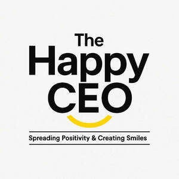

Trade Mark Journal No.2025/045 7 November 2025
UK00004284412 27 October 2025 (35)

- Class 35
- Advertising services to create brand identity for others; Advertising services to promote public awareness in the field of social welfare; Advertising services to promote public awareness of social issues; Advertising services to promote public awareness of medical issues; Analysis of the public awareness of advertising; Advice on the analysis of consumer buying habits and needs provided with the help of sensory, quality and quantity-related data; Marketing; Advertising and marketing; Advertising and marketing consultancy; Promotional marketing; Influencer marketing; Advertising and marketing services; Product marketing; Affiliate marketing; Marketing consultancy; Marketing consulting; Digital marketing; Advertising, marketing and promotion services; Marketing, advertising and promotion services; Advertising, promotional and marketing services; Advertising, marketing and promotional services; Marketing, advertising, and promotional services; Marketing research; Online marketing; Internet marketing; Marketing services; Business marketing consultancy; Marketing forecasting; Financial marketing; Referral marketing; Marketing analysis; On-line advertising and marketing services; Marketing studies; Targeted marketing; Business marketing services; Advertising copywriting; Marketing information; Distribution of advertising, marketing and promotional material; Investigations of marketing strategy; Direct marketing; Promotion, advertising and marketing of on-line websites; Planning of marketing strategies; Marketing advice; Direct marketing consulting; Consultancy services relating to advertising, publicity and marketing; Marketing research services; Event marketing; Research services relating to advertising and marketing; Marketing assistance; Design of marketing surveys; Marketing agency services; Promotion [advertising] of business; Business marketing consulting services; Development of marketing concepts; Marketing plan development ; Advertising, marketing and promotional consultancy, advisory and assistance services; Business advice relating to strategic marketing; Advertising and marketing services provided by means of social media; Advertising; Advertising and marketing services provided via communications channels; Promotional and advertising services.
The Happy CEO